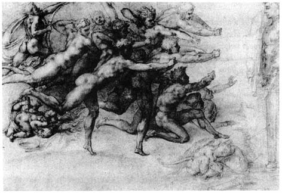

by Raphy Sarkissian
The urge to take painting seriously, or any kind of art for that matter, and to understand it not as the illustration of a theory but as a model, a theoretical model in itself... Here is a rather lecherously charged, polysemic and abstruse stanza indited by Michelangelo:
His drawing entitled Archers shooting at a herm ,2 in which a group of archers are depicted as directing arrows toward a statue of a male bust surmounting a pillar is likewise recondite. Viewed as reciprocal counterparts, Archers shooting at a herm and the above stanza could be said to form a dyad that entices present-day theoretical notions surrounding vision and visuality. This dyad’s built-in parameters, I will attempt to argue, astoundingly overlap and virtually parallel those through which Jacques Lacan theorizes “the gaze” and “the subject of representation.”  It is needless to say that this attempt to read Michelangelo through Lacan is by no means intended to unveil the psychoanalytic conditions of this particular artist. As opposed to the aims of clinical practice, the following Lacanian interpretation of a drawing coupled with a stanza is rather geared toward locating in the artist’s production notions which uncannily come close to a currently prevailing theoretical and metadiscursive “theory without end,” 3 as Malcolm Bowie characterizes Lacan’s production. In other words, the disciplinary and diachronic leap entailed here is geared toward the interpretation of an incendiary drawing and a provocative piece of verse through a theoretical path paved by Lacan, whose contribution is “a listening station for the whole conversation of mankind, a working model of the human world, a contrapuntal portrait of things as they are.” 4 There is, of course, no question but that visual and literary production and psychoanalysis intersect at infinitely many points and within infinitely many domains, and that the oscillation among such fields fecundates all frontiers reciprocally. For example, in reference to painterly production, Lacan writes: “The point is that the trompe-l'oeil of painting pretends to be something other than what it is.” 5 Given the polysemy of most of Lacan's statements, not so unlike the polysemy involved in our reception of works of art from the past and the present, this “something other” in the case of Archers shooting at a herm viewed through “You entered me through my eyes” could be said to consist of the very psychoanalytic nature of the field of vision in which the herm, seen as the viewer caught in the moment of seeing, that is to say the gaze, would be subjected to a flood of arrows, a flood of light, an iridescence that overflows it. 6 Lacan begins his chapter entitled “The Line and Light” by two mirrorically inverted conic or triangular schemas of vision, ones which he later juxtaposes in the subsequent chapter entitled “What Is a Picture?” It is important to note that these geometrically represented Euclidean models are by no means for Lacan stable or sufficient representations of the aspects of the visual process. For Lacan “drawings of this sort are an interim measure.” 7 Referring to the function of diagrams as mere vehicles toward theoretical locations that are themselves unstable, Malcolm Bowie comments:
As much of Michelangelo’s production itself -- if not all aesthetic or cultural production in general -- could be seen as “an indefinitely reinterpretable emblem or memory-aid from which paradoxes in profusion can be made to flow,” it is then a question of locating this reader’s, viewer’s and interpreter’s reception and projected intersections of Michelangelo and Lacan. Let us then begin with a summary of Lacan’s model of visual perception. Within the first, perspectival or classical triangle, the “object,” let us say a tree or a cube, produces an “image” on either the page of the draughtsman or the retina of the viewer, tracing an outer “luminous” triangle whose vertex called “geometral point” could be located upon or within the eye of the viewer. 9 In the case of an “image” produced by the draughftsman, we can say that the “geometral point” coincides with the draughtsman’s eye, while in the case of the viewer looking at a tree, cube or drawing, the “images” produced on the two retinal surfaces of the viewer are then transmitted to the brain, in which case the “geometral point(s)” could be located somewhere within the domain of the human head/body and that of the unconscious. (See the upper triangle of Appendix I as well as my dilated version of that schema in Appendix III.) As opposed to the perspectival triangle, Lacan’s second triangle, the anamorphic one, whose vertex named “point of light” emanates from the “object” (the image produced by the draughtsman, a tree or a cube), on the one hand forms a retinal image of a given point of the “object’s” surface, producing a “picture” within the observer’s head, while on the other hand it overflows the entire promontory of the viewer whom we can say Lacan calls the “screen.” (See the lower triangle of Appendix I and my dilated version of that schema in Appendix III.) Lacan’s distrust and open-endedness of linear diagrams in a way parallels his distrust of, and belief in the inherent polysemy, of language. Yet such a distrust seems to itself parallel the very nature of epistemology: shifting and ultimately ambiguous. Determined to avoid a conclusive distinction between subject and object, seer and seen, Lacan states:
I am taking the structure at the level of the subject here, and it reflects something that is already to be found in the natural relation that the eye inscribes with regard to light. I am simply that punctiform being located at the geometral point from which the perspective is grasped. No doubt, in the depths of my eye, the picture is painted. The picture, certainly, is in my eye. But I am in the picture. 10 As Lacan juxtaposes the perspectival and anamorphic schematic triangles, by no means simplistic as shown in the juxtaposed diagram or identical in form or proportions as far as the subject/object domain is concerned, he names the “object + point of light” domain “the gaze” and the “geometral point + picture” domain “the subject of representation.” (See Appendix II as well as my dilated version of that schema in Appendix III.) Thus Lacan regards the subject, the observer of the tree, as a simultaneous object, a physical receiver of light rays which will physically enter the body and inscribe images within it. Referring to the reciprocity of subject/object he writes: “The iris reacts not only to distance, but also to light, and it has to protect what takes place at the bottom of the bowl, which might, in certain circumstances, be damaged by it. The eyelid, too, when confronted with too bright a light, first blinks, that is, it screws itself up in a well-known grimace.”11 As the iris has to “protect what takes place at the bottom of the bowl” through the eyelid, so does the shield drawn in front of the herm in Michelangelo’s wretchedly beautiful depiction of archers shooting at a herm. Ungarmented, in a way themselves defenseless, the archers, only one of whom carries a mere bow, target their imaginary arrows at the shield of a herm, a lascivious representation of a male torso. Arabesque and recumbent, these ravishing figures of varying skin shades are aimless, except for their voluptuous aim at echoing the perspectival model of vision which Lacan labels through “object,” “image” and “geometral point.” A group of archers and only one bow. What a perfectly cryptic analogy to the “point of light” which Lacan will juxtapose upon the plane of the “object” and name this juxtaposition “the gaze.” A series of arrows being supposedly aimed at the herm of which only one specific actual possibility has depicted. Just as the “point of light” could be said to relate the subject’s visual perception of the “object” at a specific moment, a temporal point, so does the subject see a given object at a given instant. The singularity of the bow among a group of shooters thus becomes an astounding parallel to “the point of light” which Lacan isolates in order to interject temporality upon the purely geometric representation of the perspectival model of vision -- a temporality which one could begin to approach through the heartbeat or the blink of the eye.12 A temporality which, in the case of the herm facing a group of shooters of whom only one possesses a bow, will transpose the distinct conditions of “object” and “point of light” into “the gaze” on the one hand, and “geometral point” and “picture” into “the subject of representation” on the other. A single bow will thus correspond to a single point upon the surface of the object at a given instant. Characterizing the very temporally conditioned and multi-dimensional nature of the Lacanian schemata, Bowie elaborates:
The time of subjectivity can never be pure simultaneity or pure sequence and every diagrammatic representation has to find a way of building into itself a temporal beat. The best diagram would be the one that could perfectly out-manoeuvre the conventional timelessness and two-dimensionality of the diagrammatic imagination while making a stronger kind of sense than ordinary analytic prose. 13 |
|
Lacan’s own discourse, which can be said to be an intentional anti-discourse devised by its author in order to prevent it from the unarticulable nature of human perception, of desire, of “the gaze,” is itself expansive and avoids lucidity until, for example, the reader introduces temporality into the domain of the pictorial. Lacan, polysemous as always, declares:
The correlative of the picture, to be situated in the same place as it, that is to say, outside, is the point of gaze, while that which forms the mediation from the one to the other, that which is between the two, is something of another nature than geometral, optical space, something that plays an exactly reverse role, which operates, not because it can be traversed, but on the contrary because it is opaque -- I mean the screen. 14 The “screen,” from this point of view, could be said to stand as a metaphor for temporality. And putti, depicted here and there in Archers shooting at a herm, in embryonic positions or lying recumbent in moments of infantile scenarios, can be seen as allusions to past temporal moments at which the boundaries between such part objects as the mouth, the belly, the anus or the eye were to be initially established. Reading the stanza “You entered me through my eyes...” in the context of Archers shooting at a herm, one could see “you” as the arrow or the light rays which will allow the subject to see a given “point” on the object at a given moment. Surprisingly, and as an unmistakable metaphor to the notion of a given “point” of the surface of a given object seen at a given moment, Archers shooting at a herm contains a single bow as if the notion of temporality had already been included within Michelangelo's poetic model of vision. According to geometric optics, the rays that arrive at the cornea will converge through the ocular lens in order to be cast onto the retina in inverted positions that will cause sensations to then travel to the brain and onward in order to appear as images within the visual domain or the bodily screen. Thus, “once past the neck, grows where it is wider” seems to stand as a metaphor for the expansion of the image as it is cast upon the retinal surface following its focused inversion through the lens situated behind the iris. Listen to Michelangelo: “so does your image, which when outside soaks me, grow once it’s inside the eyes.” In other words, the object being viewed will reflect and cast a flood of light, and the portion of this flood which will enter the ocular zone through the narrow opening of the lens will be cast upon the retina and translated into sensation which will enter the domain of the cerebral in order to “grow further in size.” Or, to quote John Lott Brown, “When the eye is properly focused, light from an object outside the eye that passes through the cornea and through the lens is imaged on the retinal surface.”15 Past the retina, however, geometric optics is no longer capable of providing the exact and entire scenario surrounding visual perception. Brown, departing from the purely positivist or scientific arena, states:
The observer treats visual phenomena as though they were organized about a single central point of view and is normally not particularly conscious of the binocular source of his spatial impressions. This subjective central point of view will be called the egocentre or origin of visual space. It is to be emphasized that the egocentre is a sensory phenomena and cannot be localized in physical space. It is a point of the visual space and, as we shall see, to attempt to localize it in physical space by projection is not only logically unfounded but can only yield equivocal results. 16 It is the unconscious and the libidinal that come into play within the zone past the purely ocular, where the poet stretches “like a skin inside of which the pulp is swelling.” As the unconscious is both outside and within the visceral, the poet is bound to depart and return to the domain of the bodily, a domain whose narrow routes (“having entered me by such a narrow route”) range from such organs as the eye to the hand to the breast to other parts of the body. Unlike the Husserlian Now conditioning the visual moment, an idealized “now” which coincides with an idealized “present” moment, Michelangelo seems to be perfectly aware that the gaze as conditioned by the subject of representation is also conditioned by a temporal dimension, a “now” whose duration as a “present” is nothing but an idealized myth. Derrida, objecting to the idealized nature of the Husserlian Now, observes: “As soon as we admit this continuity of the now and the not-now, perception and nonperception in the zone of primordiality common to primordial impression and primordial retension, we admit the other into the self-identity of the Augenblick; nonpresence and nonevidence are admitted into the blink of the instant. There is a duration of the blink and it closes the eye.” 17 Michelangelo “can hardly dare to believe” the image of the beloved will leave the corporeal zone. With the blink of the eye, or the beat of the heart, in fact, the image will travel past the retinal zone to be cast upon the domain of the unconscious, where the eye is only one parameter of a set that includes the hand, the mouth, the breast, among other part objects -- part objects that now and then dominate other part objects to which they will remain always subjected. Like the L schema, a diagram through which Lacan endlessly destabilizes the self, his schematic of optical chiasma is also destabilized and temporally bound. It is, after all, a somewhat Euclidean attempt at non-Euclidean phenomena. Dilated and permutated, this diagram aims at showing us a time-bound and constantly shifting opticality that is “calibrated without being chronometric -- a non-linear, non-successive distribution of temporal points.” 18 As a pure coincidence or not purely so, Archers shooting at a herm juxtaposes an all too obvious perspectival model upon a carnal one that is on the one hand temporally bound and physical, while on the other hand atemporal and metaphysical -- shielded. Yet the physical and the metaphysical are contrarily geared, conditioned by a struggle that is evident in Michelangelo's following sonnet fragment:
At the very moment that I'm worshipping you, the memory of my unhappiness comes back into my thoughts, and weeps, and says: “One truly loves who truly burns -- the state I'm in.” And yet I make a shield from all of them... 19 At once sexually charged and Neoplatonic, the poet is caught up between physical and metaphysical desire, carnal and ethereal desire. Of the inherent nature of metaphysical desire René Girard writes:
As the role of the metaphysical grows greater in desire, that of the physical diminishes in importance. As the mediator draws nearer, passion becomes more intense and the object emptied of its concrete value.” And furthermore: “The 'physical' and 'metaphysical' in desire always fluctuate at the expense of each other. This law has myriad aspects. It explains for example the progressive disappearance of sexual pleasure in the most advanced stages of ontological sickness. 20 Yet the domain of the visual itself is at once carnal, conditioned by the erotic zones of the body, and, disembodied as the precondition of visibility, light, is itself invisible. This is precisely what one finds in so much of Michelangelo’s production, epitomized in his eidetic announcement: “One truly loves who truly burns.” To view and to read Michelangelo through Lacan, Derrida, Girard and others is nothing, perhaps, but a part of a mere effort to somehow overstep binary poles: male versus female, he versus she, subject versus object, sense versus nonsense, top versus bottom, right versus left, homosexual versus heterosexual versus bisexual, carnal versus disembodied. The difficulty in surmounting binary boundaries, however, seems to remain an ongoing challenge, one on which, with a reference to Michel Foucault, Saslow rightfully comments: “...even when they reject, either implicitly or explicitly, the specific role assigned to a particular individual or sex, the speakers cannot altogether break out of their habitual binary frame of reference.” 21 And this is certainly so. Indeed Foucault titles part one of the introductory volume of his series entitled The History of Sexuality “We 'Other Victorians'.” Yet, as I have attempted to argue, one finds instances in Michelangelo’s production where the fundamental nature of the Lacanian gaze seems to be uncannily depicted with its full instability, dissolving such distinctions between subject and object and, from today’s perspective, replacing them by such interdependent and mutually inclusive notions as “the gaze” and “the subject of representation.” 22 In a chapter entitled “The Lyric: Michelangelo,” Nesca A. Robb sets Michelangelo apart from his milieu: “It was left for Michelangelo to inform the Petrarchan-Neoplatonic lyric with something of the fire and vigour that distinguishes his art. With all his imperfections he towers above the more polished versifiers who surrounded him. They wrote fluently and too often had nothing to say; he used a language of which he was often scarcely master, but it is unmistakably genius trying to speak.” 23 Or rather speaking, as Robb would no doubt have agreed. Furthermore, Robb rightly points out that although certain Neoplatonic notions were well received by Michelangelo, they never stifled his imagination. 24 Neoplatonism, which could be regarded as the philosophical and intellectual counterpart of the visual arts of the Renaissance, was a revised revival of certain archetypes of ancient Greek philosophy. If Michelangelo looked back at the past to some extent, he at the same time looked forward to the future. Over four centuries later Lacan would theorize vision by erasing the distinction between seer and seen, subject and object, a distinction that one finds well blurred within the poetic domain of Michelangelo who avouches: I see, with your beautiful eyes, a sweet light that with my blind ones I could never see; 25 “I see, with your beautiful eyes...” Within the domain of the visual, the domain of both I and you, subject and object, the poet has erased the boundaries between the absolutely distinct, binary and reductive lexical domains of seer and seen, active and passive. Or, engulfed within the domain of the ocular, the infinitely complex territory of the visible, where the very organ of sight is utterly invisible to itself, and whose nature is somewhat diametrically opposed to that of visual perception, Michelangelo begins an unfinished capitolo about perception, only to shift to the biological organ in the second stanza. He muses: The eyelid, when it contracts, doesn’t limit sight with its shadow, for the eye has no constraint from one end of its turning-place to the other.26 While “the eyelid, when it contracts,” might limit physical registry of the object upon the retina, the perceptual trace cast upon the retina will remain within the consciousness of the viewer. No doubt the term “retinal trace” as a substitute for “the image” becomes somewhat dysfunctional since vision at that point becomes a process located within the psychic zone whose nature extends that of the merely anatomical. Lacan, after stating the physical function of the eyelid, will depart to the psychological zone of the viewer in order to interrelate their functions. He writes: “The eyelid, too, when confronted with too bright a light, first blinks, that is, it screws itself up in a well-known grimace.” 27 A paragraph later he overlaps the physical with the instantaneous and psychological and states: The relation of the subject with that which is strictly concerned with light seems, then, to be already somewhat ambiguous. Indeed, you see this on the schema of the two triangles, which are inverted at the same time as they must be placed one upon the other. What you have here is the first example of this functioning of interlacing, intersection, chiasma, which I pointed out above, and which structures the whole of this domain. 28 Correlating the biological (“the eyelid”), perceptive (“sight”) and temporal (“when”) parameters to which he alludes in the first stanza, Michelangelo’s verse seems to arrive quite accurately where Lacan arrives with “the schema of the two triangles, which are inverted at the same time as they must be placed one upon the other.” 29 Of the invincible character of the bodily and perceptual nature of vision, the inseparable domains of the organic and the phenomenal, to which Lacan refers as “the subject of representation” and “the gaze,” Michelangelo enounces: But the eye, which moves around slowly underneath, can reveal just a small part of its full ball, which shows but little of its serene gaze... 30 While I see through my eye, I can only see a partial view of it through a mirror. I will never be able to see, however, what is beyond the surface of a portion of the ocular globe. “I enter the picture as a cast shadow, cast because, dumbly, I get in the way of the light. And because I get in the way of it, I cannot see it. ” 31 * * * |
|
| It is, of course, the mere desire of this interpreter to locate Lacan within instances of Michelangelo’s poetic and visual production. Yet is it not polysemy and open-endedness that form the very function of art? This is a function that bridges the inherent gap between science and philosophy, as Gilles Deleuze and F*lix Guattari expostulate in What is Philosophy? They claim: “With its concepts, philosophy brings forth events. Art erects monuments with its sensations. Science constructs states of affairs with its functions. A rich tissue of correspondences can be established between the planes.” 32 In Archers shooting at a herm coupled with fragments of poetic verse, we encounter sensations, concepts and functions of vision and visuality that are asymptotic -- ones that are as invisible as the archers’ arrows, as “invisible” as light itself. |
|